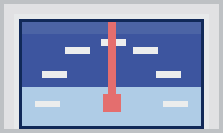
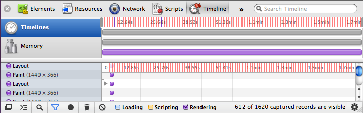

{kind=link}

Requested by several designers at Yahoo! for the original YSlow logo PSD to be used in promotional materials such as t-shirts, posters, flyers, etc in some events that occurred along this year, I had no idea where it was ever since I joined the Exceptional Performance Team to take care of YSlow amongst other performance tools. In order to solve this problem I decided to rebuild it from scratch because it doesn't seem so complicated, the problem was I'm a speed freak, not a designer so inspired by the famous pure css Twitter fail whale I put my CSS muscles to work out focusing obviously on performance to provide those designers a scalable YSlow logo for their delight as well as potentially having a smaller image payload to be used on the web.
It was an interesting challenge from performance perspective since the less code I use the smaller the final image would be and how fast it would perform (rendering time). My goal was to achieve a one-size-fits all solution to be used in the wild on the web. Besides performance, as a frontend engineer I was also interested in how CSS3 could help solve this issue (cross-browser possibly) and the limitations imposed.
I use Chrome for development so my first goal was to make it happen for this one first before making it cross-browser compatible. It was also easy to benchmark the rendering time which was my main point of concern when talking about CSS3 background gradients, border radius, transformation, etc.
Having JSFiddle as my playground was really helpful because it was a trial and error task plus I could keep track of versions and share so easily. Chrome Developer Tools: Element Styles played also an important role letting me test my changes on-the-fly.
Here is my JSFiddle playground where you can see the code and final image result:
The three images on Result tab from top-down: original (250px width), pure CSS3 with 250px width and pure CSS3 with 50% width. If you're reading this post on Chrome you're expected to get better results. JSFiddle also allows you to fork the code and apply your own changes, be my guest.
With 21 DOM elements (22 counting the <style> block) and using uneven border-radius for geometries, background gradients to make it shiny, rounded and more realistic and some transform rotations were enough to finally get the YSlow speedometer logo without the red needle. My first attempt was to use DOM element borders to achieve a pointy triangle which works fine but unfortunately it did not scale due to percentage values not being allowed on border-width and background gradients are not applied to borders either making it not shiny as in the original image. When I hit this wall I pinged Thierry Koblentz to the rescue. He eats CSS not only for breakfast and is always up for CSS challenges. It was impressive, he came up with a very nice solution using rotated displaced DIVs hiding the undesired parts with overflow:hidden which allowed me to make it shiny through background gradient. As a plus he also included a nice transition that smoothly animates the needle to the max value when hovering.
Reached my goal for Chrome using basically W3C specification for CSS3 and a few -webkit- prefixes, it was time to attack the other browsers, so I started adding other vendors prefixes like -moz-, -o-, -ms- and filter for Internet Explorer.
I got very disappointed with the cross-browser results and after spending some time trying to figure out a way to fix for all browsers without increasing the CSS code or adding more HTML elements I gave up and played the John Lennon: "Imagine there's no cross-browser issue..." (I wonder how come our honorable Performance Calendar curator hasn't thought about such song before).
| Browser | Vendor Specific CSS3 | W3C CSS3 only |
|---|---|---|
| Chrome 15 | Best one |
Faded, bad needle |
| Firefox 8 | Misplaced needle |
Too faded, bad needle |
| Opera 11 | Misplaced needle, broken glass |
Too faded, broken glass |
| Safari 5 including iOS5 |
Good one |
Faded, Atari 2600-like |
| Firefox 3 |  Too faded, Atari 2600-like |
|
| IE 6-9 | Micronesia flag-like |
Cropped European Union flag-like |
Interesting how the W3C only versions fallback "gracefully", that shows no browser is strictly following specs or either the specs are not fully defined yet by the time of this writing. Even not fully resembling the original, with some exceptions, they all look like a speedometer gauge somehow, except er, guess who?
With that pure CSS3 image working decently at least on Chrome I was able to provide the designers what they were after and that was enough for me to start my performance benchmarking. I know one might argue it's possible to make it work better on other browsers with more DOM elements and/or more CSS selectors/rules, but that was a time consuming task and I was working on it during my spare time, so enough with CSS and let's see what we are here for.
In order to compare real image files versus CSS3 generated ones, I created a few pages containing only one image per page, either real files URL and data URI (<img src="...">) or CSS3 (HTML + CSS <style> block in the same page).
Hosting these pages in a local Apache server I was able to fetch them with and without compression (Accept-Encoding: gzip,deflate) via curl getting the content length for the CSS3 and data URI ones and the real images URL obviously without compression. The minified with compression lengths were used as payload per page.
Adding a small script at the bottom of these pages that reloads the page 100 times with 1 second interval using sessionStorage for counting and with Chrome Developer Tools: Timeline Panel recording the page activity, I was able to export the logged data then with a NodeJS script I could extract and filter only the timing related to the rendering activity, cleaning the top and bottom 5% of the sample to remove some noisy data then getting the average in milliseconds.

| Type | Pros | Cons | Payload (bytes) | Rendering (ms) |
|---|---|---|---|---|
| CSS3 W3C | "Standard", small | Not x-browser yet, extra markup | 807 | 4.436 |
| CSS3 -o- | Works on Opera :-) | Vendor specific, extra markup | 811 | - |
| CSS3 -moz- | Works on Firefox :-) | Vendor specific, extra markup | 815 | - |
| CSS3 -ms- | Works on IE :-) | Vendor specific, extra markup | 945 | - |
| CSS3 -webkit- | Works on Chrome/Safari | Vendor specific, extra markup | 977 | 11.233 |
| CSS3 all | Covers "all" browsers, small, animation | Unused rules, extra markup | 1400 | 11.238 |
| WebP | Smallest | Not supported by all major browsers, no transparency | 4066 | 1.769 |
| WebP inline | Smallest image file | Non x-browser, no transparency, non IE < 8 | 4175 | 5.701 |
| JPG inline | Smaller image file, x-browser | No transparency, non IE < 8 | 7881 | 3.313 |
| JPG | Smaller image file, x-browser | No transparency | 7926 | 1.768 |
| PNG8 | Small image file, x-browser, transparency | Up to 256 colors | 8269 | 1.854 |
| PNG8 inline | Small image file, transparency | Up to 256 colors, non IE < 8 | 8399 | 4.267 |
| PNG24 | High quality, alpha channel | Large file, buggy on IE < 7 | 27391 | 1.736 |
| PNG24 inline | High quality, alpha channel | Large file, non IE < 8 | 27704 | 5.968 |
Which leads to the following chart:
CSS3 generated images can achieve smaller payloads compared to regular images either URL or data URI ones. In this YSlow logo example, the W3C standard CSS3 is roughly 34 times smaller than PNG24 image version. Data URI versions of the same image type have around the same payload after compressed, they get increased a few bytes only, interesting in this case the inline version of JPG is slightly smaller than the regular JPG image file.
On the other hand CSS3 generated images rendering time is worse than regular images, being around 6.5 times slower than the PNG24 version. The inline versions more than double the rendering time when compared to their regular image file versions. The CSS3 W3C standard version rendering performed 2.5 times faster than -webkit- or the one with all browser vendors prefixes, this doesn't necessarily mean it's really faster because per the screenshots results above none of them triggered all the CSS rules to render the logo properly according to the original version.
These rendering times were measured just by displaying the static images on the page without any hovering user interaction that animates the gauge needle on CSS3 versions. These numbers would likely to be increased in the case-scenario where users are allowed to hide-and-show or drag-and-drop images over the viewport triggering several repaint, reflow and restyle on these DOM elements.
Comparing apples-to-apples quality-wise, CSS3 with all prefixes or -webkit- on Chrome are comparable to the PNG24 version, both have transparency background and no pixelation. CSS3 is 34 times smaller, 6.5 times slower (in order of milliseconds) and has the advantage of keeping the same payload for different sizes while PNG would increase when resized from the original source (PSD when available) to avoid quality loss, however users are not able to save CSS3 as image without taking screenshots.
Not really, hopefully in the near future we'll get rid of browser vendors specific prefixes and have a one-size-fits-all CSS solution that works equally in all browsers, but even when we get there, it's a very time consuming task to create images from scratch using DOM elements and styles manually, an illustrator tool to aid drawing is high demanded for such task where one could drag over Bézier curves adjusting the control points in order to get the correspondent directives to CSS3 border-radius shaping geometric lines properly.